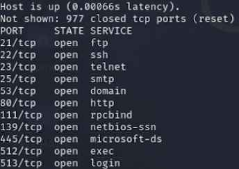
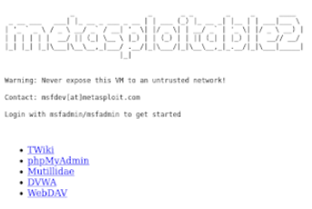
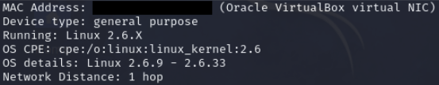
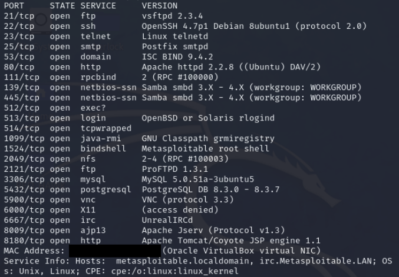
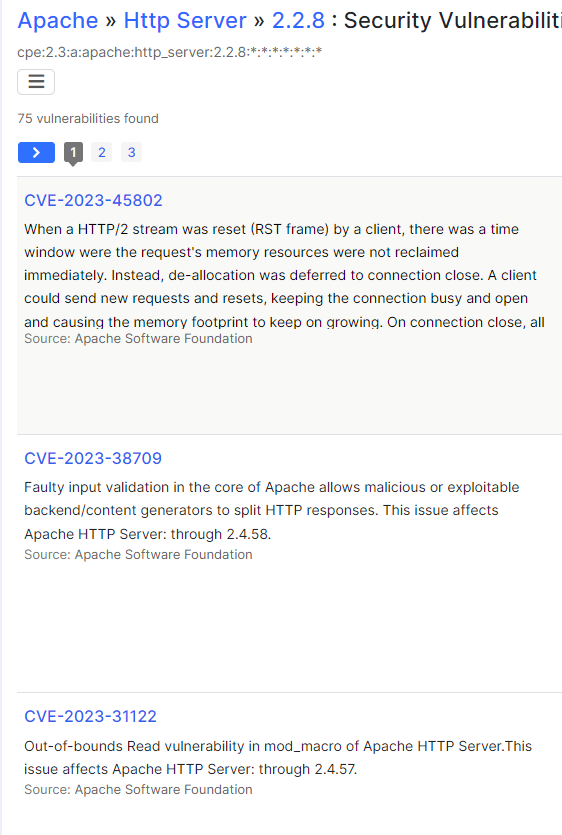
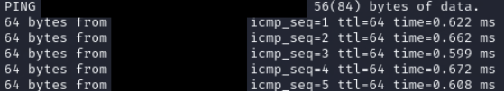
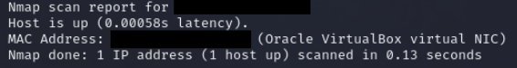
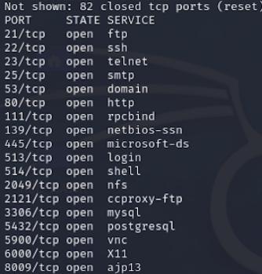

Scanning
Tools to scan networks:
It's important to be aware that there are many nmap scans not yet covered.
Consulting the manual or a cheat sheet can be beneficial for gaining proficiency in using nmap.
- netdiscover: It is beneficial to identify all devices currently connected to our network.
- netstat -nr: Under the Gateway , you can find the IP address of your router.
- nmap: Nmap, short for "Network Mapper," is a free and open-source tool for network discovery and security auditing.
- Default Scan: Running nmap by default scans 1000 ports. These are the results obtained from scanning the
target operating system. It reveals all the ports that nmap could detect.

- It's interesting to note that Port 80 is open, indicating that this IP address is hosting an HTTP website.
By copying and pasting the IP address into Firefox, we can view the website being hosted.

- You can scan multiple subnetworks of the target by determining its class type. In our case, it's a Class C network.
If the IP address is, for example, ‘192.167.8.3,’ replace the last digit (3) with 1 and execute the command ‘nmap 192.167.8.1-255’
or ‘nmap 192.167.8.1/24.’ The ‘/24’ notation indicates that the first three octets remain constant.
- TCP SYN Scan: It conducts a rapid scan, executing only the initial handshake of the three.
This can be accomplished by entering '-sS'. This command requires root privileges to execute.
- Full TCP Scan: This scan initiates the three handshakes, thereby establishing a full connection to all available ports.
This command can be executed without root privileges. However, it is easily detectable and leaves numerous traces. This can be accomplished by entering '-sT'.
- TCP FIN Scan: The FIN flag indicates the conclusion of data transmission from the sender to the receiver. Once a side has finished transmitting data, it sends a
FIN packet to elegantly terminate the connection. This scan is sending a TCP packet with the FIN (finish) flag set to the target port. If the port is open,
there will be no response, suggesting that the service is active. Conversely, if the port is closed, it will reply with an RST (reset) packet. This can be accomplished by entering '-sF'.
- UDP Scan: Slower than TCP scan. This can be accomplished by entering '-sU'. This command requires root privileges to execute.
- OS Scan: This scan is quite beneficial as it allows you to approximate the operating system of the target. My scan results indicate that the target is operating on VirtualBox with a Linux OS.
While it often cannot ascertain the exact OS, it provides a reliable estimate. The scan also provides information about the network distance; in this case, it's one hop, indicating that the target
system is within our network. This scan can be accomplished by entering '-O' and requires root privileges to execute.

- Version Scan: This scan is also very useful because if we know which version is running on the system, we can then search for vulnerabilities. As you can see in the image, there are several known
vulnerabilities that we could test on the target just by searching Apache 2.2.8. Compared to the '-sS' scan, we are obtaining both the open ports and the version information. This scan can be accomplished
by entering '-sV' and requires root privileges to execute.


- Aggressive Scan: Enables OS detection, version detection and script scanning. You can also enter them individually as '-O', '-sV', and '-sC'. I will provide further explanation on script scanning ('-sC').
This scan can be accomplished by entering '-A' and requires root privileges to execute.
- No Port Scan: Utilizing this scan, nmap does not conduct a port scan; it merely identifies hosts and enumerates those that reply to the host discovery probes. Its function is similar to the ping command.
Both send an ICMP Echo request, but nmap is more powerful and yields extra information. The first image shows the use of the 'ping' command, indicating that the host is responding to our ICMP Echo requests.
The second image displays the results of using 'nmap -sn', which not only confirms the host's response but also reveals the MAC address. We can also use this to scan a range of networks by typing,
for example, ‘nmap -sn 192.167.8.1-255’ or ‘nmap -sn 192.167.8.1/24.’ It can replace the ‘netdiscover’ scan.
This can be accomplished by entering '-sn'. Executing this command does not require root privileges.


- Scan a specific Port: Rather than scanning 1000 ports, we can specify which ports to scan using '-p ?'. The question mark represents any port you wish to scan. For instance,
'nmap -p 80' would scan the target to see if port 80 is open. It's also possible to scan multiple ports by separating them with a comma, such as 'nmap -p 80,22,443'.
If you're interested in scanning a range of ports, you can use the command 'nmap -p 1-200', which will scan all ports from 1 to 200.
- Fast Port Scan: It will scan the most common 100 ports. This can be accomplished by entering '-F'. Executing this command does not require root privileges.
Using the ‘-F’ switch, I found the following ports. Out of the 100 most common ports, only 18 were open on the target’s machine
It's quite intriguing to compare the default scan with the '-F' scan. The first image represents the default scan, which covered 1000 ports.
The second image was produced using the '-F' scan. Interestingly, the '-F' scan yielded more results, with the only exception being Port 512, which was detected in the default scan.
Default Scan:

-F Scan:
